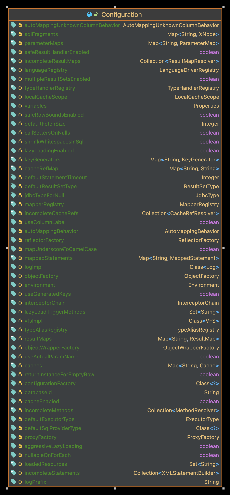
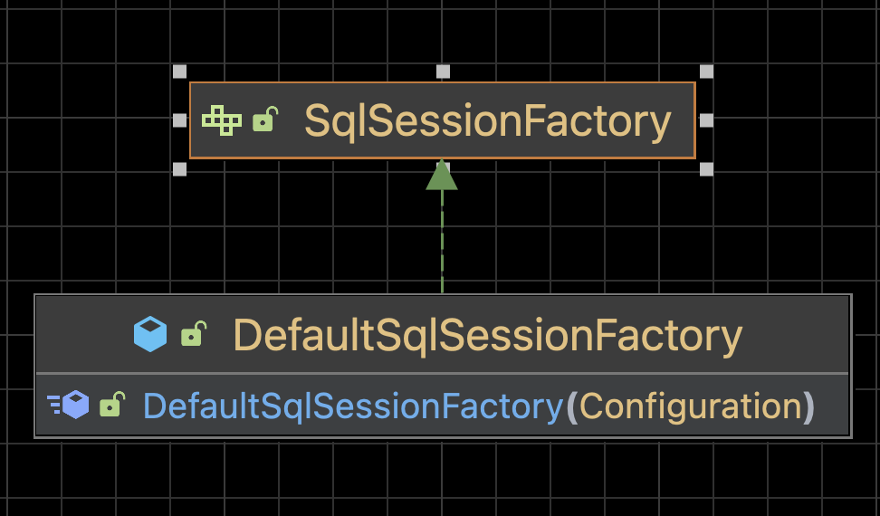

MyBatis 初始化流程
基本流程：
-
使用
XMLConfigBuilder解析MyBatis主配置文件 -
使用
XMLMapperBuilder解析mapper.xml配置文件-
SQL方法保存在Configuration.mappedStatements
-
-
使用
MapperRegistry注册mapper接口，为每个mapper接口生成一个MapperProxy代理对象 -
最终执行代理类中的代理方法
核心类：
| Configuration | SqlSessionFactory |
|---|---|

|

|
创建 SqlSessionFactory
public SqlSessionFactory build(InputStream inputStream, String environment, Properties properties) {
try {
// 创建 XMLConfigBuilder 和创建 Configuration
XMLConfigBuilder parser = new XMLConfigBuilder(inputStream, environment, properties);
// 解析 MyBatis-config.xml，并返回 DefaultSqlSessionFactory
return build(parser.parse());
} catch (Exception e) {
throw ExceptionFactory.wrapException("Error building SqlSession.", e);
} finally {
ErrorContext.instance().reset();
try {
inputStream.close();
} catch (IOException e) {
// Intentionally ignore. Prefer previous error.
}
}
}public SqlSessionFactory build(Configuration config) {
return new DefaultSqlSessionFactory(config);
}解析 MyBatis-config.xml
对应的解析类 org.apache.ibatis.builder.xml.XMLConfigBuilder，入口在 build 方法。
public Configuration parse() {
if (parsed) {
throw new BuilderException("Each XMLConfigBuilder can only be used once.");
}
parsed = true;
// 解析 mybatis-config.xml 到 Configuration
parseConfiguration(parser.evalNode("/configuration"));
return configuration;
}private void parseConfiguration(XNode root) {
try {
propertiesElement(root.evalNode("properties"));
Properties settings = settingsAsProperties(root.evalNode("settings"));
loadCustomVfs(settings);
loadCustomLogImpl(settings);
typeAliasesElement(root.evalNode("typeAliases"));
pluginElement(root.evalNode("plugins"));
objectFactoryElement(root.evalNode("objectFactory"));
objectWrapperFactoryElement(root.evalNode("objectWrapperFactory"));
reflectorFactoryElement(root.evalNode("reflectorFactory"));
settingsElement(settings);
environmentsElement(root.evalNode("environments"));
databaseIdProviderElement(root.evalNode("databaseIdProvider"));
typeHandlerElement(root.evalNode("typeHandlers"));
// 使用 XMLMapperBuilder 解析 mapper
mapperElement(root.evalNode("mappers"));
} catch (Exception e) {
throw new BuilderException("Error parsing SQL Mapper Configuration. Cause: " + e, e);
}
}解析 mapper.xml
对应的解析类 org.apache.ibatis.builder.xml.XMLMapperBuilder，入口在 mapperElement 方法。
解析 <mapper> 标签
private void mapperElement(XNode parent) throws Exception {
if (parent != null) {
for (XNode child : parent.getChildren()) {
// package
if ("package".equals(child.getName())) {
String mapperPackage = child.getStringAttribute("name");
configuration.addMappers(mapperPackage); (1)
} else {
String resource = child.getStringAttribute("resource");
String url = child.getStringAttribute("url");
String mapperClass = child.getStringAttribute("class");
// resource
if (resource != null && url == null && mapperClass == null) {
ErrorContext.instance().resource(resource);
try (InputStream inputStream = Resources.getResourceAsStream(resource)) {
XMLMapperBuilder mapperParser = new XMLMapperBuilder(inputStream, configuration, resource
, configuration.getSqlFragments());
mapperParser.parse(); (2)
}
}
// url
else if (resource == null && url != null && mapperClass == null) {
ErrorContext.instance().resource(url);
try (InputStream inputStream = Resources.getUrlAsStream(url)) {
XMLMapperBuilder mapperParser = new XMLMapperBuilder(inputStream, configuration, url,
configuration.getSqlFragments());
mapperParser.parse(); (2)
}
}
// class
else if (resource == null && url == null && mapperClass != null) {
Class<?> mapperInterface = Resources.classForName(mapperClass);
configuration.addMapper(mapperInterface); (1)
} else {
throw new BuilderException("A mapper element may only specify a url, resource or class, but " +
"not more than one.");
}
}
}
}
}| 1 | 使用 Configuration#addMapper 解析 mapper， |
| 2 | 使用 XMLMapperBuilder#parse 解析 mapper，底层用的同样是 Configuration#addMapper |
public void parse() {
// 判断是否包含在未解析资源中
if (!configuration.isResourceLoaded(resource)) {
// 解析 mapper 的子标签，失败的存入 incompleteXXX
configurationElement(parser.evalNode("/mapper"));
// 标记为已解析
configuration.addLoadedResource(resource);
// 注册 mapper 接口
bindMapperForNamespace();
}
// 重新解析 失败的结果集
parsePendingResultMaps();
// 重新解析 失败的缓存ref
parsePendingCacheRefs();
// 重新解析 失败的 SQL 语句
parsePendingStatements();
}解析 <mapper> 的子标签
在 configurationElement 方法中，当遇到 <select> <insert> <update> <delete> 时，会调用 XMLMapperBuilder 解析 SQL 语句
private void configurationElement(XNode context) {
try {
String namespace = context.getStringAttribute("namespace");
if (namespace == null || namespace.isEmpty()) {
throw new BuilderException("Mapper's namespace cannot be empty");
}
// 设置 namespace，解析 mapper 接口用
builderAssistant.setCurrentNamespace(namespace);
// 解析 二级缓存引用
cacheRefElement(context.evalNode("cache-ref"));
// 解析 二级缓存
cacheElement(context.evalNode("cache"));
// 参数映射 -> Configuration#parameterMaps
parameterMapElement(context.evalNodes("/mapper/parameterMap"));
// 结果映射 -> org.apache.ibatis.session.Configuration.resultMaps
resultMapElements(context.evalNodes("/mapper/resultMap"));
// 解析共用 SQL 片段
sqlElement(context.evalNodes("/mapper/sql"));
// 解析 SQL 语句，使用 XMLStatementBuilder
buildStatementFromContext(context.evalNodes("select|insert|update|delete")); (1)
} catch (Exception e) {
throw new BuilderException("Error parsing Mapper XML. The XML location is '" + resource + "'. Cause: " + e, e);
}
}| 1 | 解析完毕会添加到 Configuration 的 mappedStatements 中 |
注册 mapper 接口
private void bindMapperForNamespace() {
String namespace = builderAssistant.getCurrentNamespace();
if (namespace != null) {
Class<?> boundType = null;
try {
boundType = Resources.classForName(namespace); (1)
} catch (ClassNotFoundException e) {
// ignore, bound type is not required
}
if (boundType != null && !configuration.hasMapper(boundType)) {
// 标记已加载
configuration.addLoadedResource("namespace:" + namespace);
configuration.addMapper(boundType); (2)
}
}
}| 1 | 加载 xml 中 namespace 对应的 class |
| 2 | 使用 Configuration#addMapper 注册 mapper |
public <T> void addMapper(Class<T> type) {
mapperRegistry.addMapper(type);
}public <T> void addMapper(Class<T> type) {
// 只添加接口
if (type.isInterface()) {
// 已添加过抛出异常
if (hasMapper(type)) {
throw new BindingException("Type " + type + " is already known to the MapperRegistry.");
}
boolean loadCompleted = false;
try {
// 保存代理工厂到 knowMapper
knownMappers.put(type, new MapperProxyFactory<>(type)); (1)
// 解析接口中的注解和 xml 文件
MapperAnnotationBuilder parser = new MapperAnnotationBuilder(config, type); (2)
parser.parse();
loadCompleted = true;
} finally {
// 如果添加失败，则删除
if (!loadCompleted) {
knownMappers.remove(type);
}
}
}
}| 1 | 在这里 mapper 接口被替换成了 MapperProxyFactory |
| 2 | 注解的 SQL 最终会生成 ProviderSqlSource 对象 |
解析 SQL
在 XMLMapperBuilder#configurationElement 方法的最后，调用 buildStatementFromContext 方法解析 SQL。
private void buildStatementFromContext(List<XNode> list) {
if (configuration.getDatabaseId() != null) {
buildStatementFromContext(list, configuration.getDatabaseId());
}
buildStatementFromContext(list, null);
}private void buildStatementFromContext(List<XNode> list, String requiredDatabaseId) {
// 每个 SQL 语句对应一个 MappedStatement
for (XNode context : list) {
final XMLStatementBuilder statementParser =
new XMLStatementBuilder(configuration, builderAssistant, context, requiredDatabaseId);
try {
// 解析 SQL 并添加到 Configuration
statementParser.parseStatementNode();
} catch (IncompleteElementException e) {
configuration.addIncompleteStatement(statementParser);
}
}
}具体的解析在 XMLStatementBuilder#parseStatementNode 方法中。
public void parseStatementNode() {
// key
String id = context.getStringAttribute("id");
String databaseId = context.getStringAttribute("databaseId");
// 根据 databaseId 判断是否加载 SQL 标签
if (!databaseIdMatchesCurrent(id, databaseId, this.requiredDatabaseId)) {
return;
}
// nodeName : select insert update delete
String nodeName = context.getNode().getNodeName();
// SQL 类型
SqlCommandType sqlCommandType = SqlCommandType.valueOf(nodeName.toUpperCase(Locale.ENGLISH));
boolean isSelect = sqlCommandType == SqlCommandType.SELECT;
// 是否刷新缓存，如果配置了 flushCache 使用 flushCache，如果没有配置，select 语句为 false，非 select 语句为 true
boolean flushCache = context.getBooleanAttribute("flushCache", !isSelect);
// 是否使用二级缓存，如果配置了 useCache 使用 useCache，如果滑配置，select 语句为 true
boolean useCache = context.getBooleanAttribute("useCache", isSelect);
boolean resultOrdered = context.getBooleanAttribute("resultOrdered", false);
// 解析 SQL 片段
// Include Fragments before parsing
XMLIncludeTransformer includeParser = new XMLIncludeTransformer(configuration, builderAssistant);
includeParser.applyIncludes(context.getNode());
String parameterType = context.getStringAttribute("parameterType");
Class<?> parameterTypeClass = resolveClass(parameterType);
String lang = context.getStringAttribute("lang");
// 在 new Configuration() 时设置，默认值为 XMLLanguageDriver
LanguageDriver langDriver = getLanguageDriver(lang);
// 解析 selectKey
// Parse selectKey after includes and remove them.
processSelectKeyNodes(id, parameterTypeClass, langDriver);
// (仅限INSERT和UPDATE)这将告诉MyBatis使用JDBC getGeneratedKeys 方法来检索由数据库内部生成的键(例如，MySQL或SQL Server等RDBMS中的自动增量字段)。默认：
// false 。
// Parse the SQL (pre: <selectKey> and <include> were parsed and removed)
KeyGenerator keyGenerator;
String keyStatementId = id + SelectKeyGenerator.SELECT_KEY_SUFFIX;
keyStatementId = builderAssistant.applyCurrentNamespace(keyStatementId, true);
if (configuration.hasKeyGenerator(keyStatementId)) {
keyGenerator = configuration.getKeyGenerator(keyStatementId);
} else {
keyGenerator = context.getBooleanAttribute("useGeneratedKeys",
configuration.isUseGeneratedKeys() && SqlCommandType.INSERT.equals(sqlCommandType))
? Jdbc3KeyGenerator.INSTANCE : NoKeyGenerator.INSTANCE;
}
// SQL 解析
SqlSource sqlSource = langDriver.createSqlSource(configuration, context, parameterTypeClass); (1)
StatementType statementType = StatementType.valueOf(context.getStringAttribute("statementType",
StatementType.PREPARED.toString()));
// 解析标签属性，提供给 MapperBuilderAssistant 使用
Integer fetchSize = context.getIntAttribute("fetchSize");
Integer timeout = context.getIntAttribute("timeout");
String parameterMap = context.getStringAttribute("parameterMap");
String resultType = context.getStringAttribute("resultType");
Class<?> resultTypeClass = resolveClass(resultType);
String resultMap = context.getStringAttribute("resultMap");
String resultSetType = context.getStringAttribute("resultSetType");
ResultSetType resultSetTypeEnum = resolveResultSetType(resultSetType);
if (resultSetTypeEnum == null) {
resultSetTypeEnum = configuration.getDefaultResultSetType();
}
String keyProperty = context.getStringAttribute("keyProperty");
String keyColumn = context.getStringAttribute("keyColumn");
String resultSets = context.getStringAttribute("resultSets");
// 向 Configuration 添加 MappedStatement 对象
builderAssistant.addMappedStatement(id, sqlSource, statementType, sqlCommandType,
fetchSize, timeout, parameterMap, parameterTypeClass, resultMap, resultTypeClass,
resultSetTypeEnum, flushCache, useCache, resultOrdered,
keyGenerator, keyProperty, keyColumn, databaseId, langDriver, resultSets); (2)
}| 1 | 最终得到 SqlSource 对象 |
| 2 | 为每条 SQL 标签创建一个 MappedStatement 对象，保存在 Configuration 中。 |
解析过程
基于 SqlNode 接口的组合模式，SqlNode 接口提供了非常多的实现类（如下图），其中很多实现类都对应一个动态 SQL 标签（叶子节点），其中 MixedSqlNode 实现类是作为非叶子节点，实现管理子节点的相关方法。
SqlNode 继承关系图对应的解析类 org.apache.ibatis.builder.xml.XMLScriptBuilder 入口在 mapperElement 方法。
创建 XMLScriptBuilder
public SqlSource createSqlSource(Configuration configuration, XNode script, Class<?> parameterType) {
XMLScriptBuilder builder = new XMLScriptBuilder(configuration, script, parameterType);
return builder.parseScriptNode();
}public XMLScriptBuilder(Configuration configuration, XNode context, Class<?> parameterType) {
super(configuration);
this.context = context;
this.parameterType = parameterType;
initNodeHandlerMap(); (1)
}| 1 | initNodeHandlerMap 方法初始化了全部的动态 SQL 标签解析器
|
解析 SQL 标签
public SqlSource parseScriptNode() {
MixedSqlNode rootSqlNode = parseDynamicTags(context); (1)
SqlSource sqlSource;
// 存在未解析的 ${} 或者存在动态标签则为动态 SQL
if (isDynamic) {
// 动态SQL
sqlSource = new DynamicSqlSource(configuration, rootSqlNode); (2)
} else {
// 原生SQL（不需要处理的SQL）
sqlSource = new RawSqlSource(configuration, rootSqlNode, parameterType); (3)
}
// 最终得到的是 StaticSqlSource 对象
return sqlSource; (2)
}| 1 | 解析动态 SQL 标签，并判断是否是动态 SQL 并修改 isDynamic |
| 2 | DynamicSqlSource 中运行时 解析 #{} 和 ${} |
| 3 | RawSqlSource 中会在创建时使用 SqlSourceBuilder 解析 #{}，替换成 ? |
解析过程
protected MixedSqlNode parseDynamicTags(XNode node) {
List<SqlNode> contents = new ArrayList<>();
NodeList children = node.getNode().getChildNodes();
// 遍历所有子节点
for (int i = 0; i < children.getLength(); i++) {
XNode child = node.newXNode(children.item(i));
if (child.getNode().getNodeType() == Node.CDATA_SECTION_NODE || child.getNode().getNodeType() == Node.TEXT_NODE) {
// mapper.xml 中的 SQL 语句
String data = child.getStringBody("");
TextSqlNode textSqlNode = new TextSqlNode(data);
// 命中 ${}
if (textSqlNode.isDynamic()) {
contents.add(textSqlNode);
isDynamic = true;
} else {
contents.add(new StaticTextSqlNode(data));
}
}
// 命中动态标签
else if (child.getNode().getNodeType() == Node.ELEMENT_NODE) {
String nodeName = child.getNode().getNodeName();
NodeHandler handler = nodeHandlerMap.get(nodeName);
if (handler == null) {
throw new BuilderException("Unknown element <" + nodeName + "> in SQL statement.");
}
handler.handleNode(child, contents);
isDynamic = true;
}
}
return new MixedSqlNode(contents); (1)
}| 1 | 得到组合模式中的非叶子节点 |
SqlSource
SqlSource 中只有一个方法 getBoundSql ，控制着动态 SQL 语句解析的整个流程，此方法会返回数据库可以执行的 SQL。
public interface SqlSource {
BoundSql getBoundSql(Object parameterObject);
}DynamicSqlSource
public BoundSql getBoundSql(Object parameterObject) {
DynamicContext context = new DynamicContext(configuration, parameterObject);
rootSqlNode.apply(context);
SqlSourceBuilder sqlSourceParser = new SqlSourceBuilder(configuration);
Class<?> parameterType = parameterObject == null ? Object.class : parameterObject.getClass();
// 解析 #{}
SqlSource sqlSource = sqlSourceParser.parse(context.getSql(), parameterType, context.getBindings());
// 解析 ${}
BoundSql boundSql = sqlSource.getBoundSql(parameterObject);
context.getBindings().forEach(boundSql::setAdditionalParameter);
return boundSql;
}